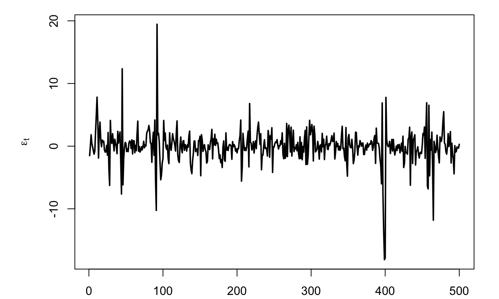
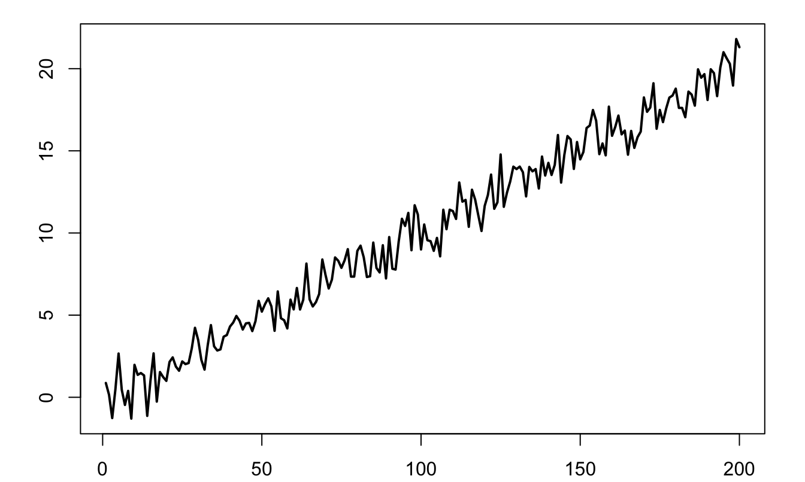
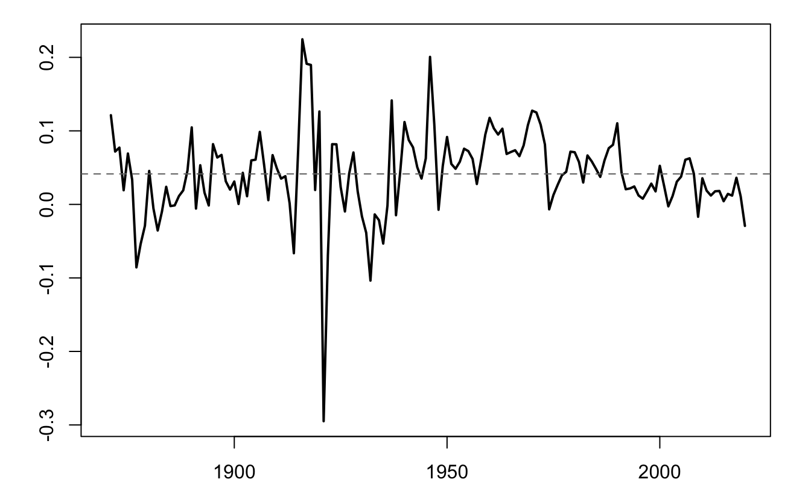
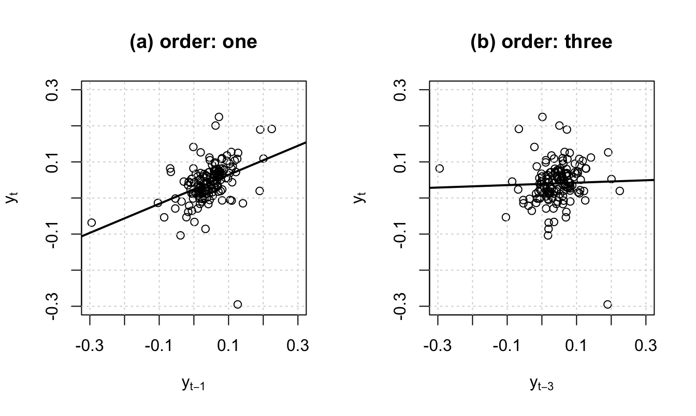
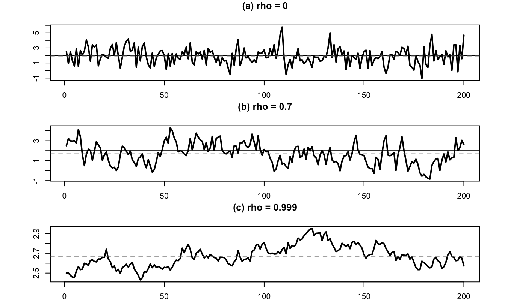

Chapter 1 Basics
1.1 Shocks and lag operator
A time series is an infinite sequence of random variables indexed by time: \(\{y_t\}_{t=-\infty}^{+\infty}=\{\dots, y_{-2},y_{-1},y_{0},y_{1},\dots,y_t,\dots\}\), \(y_i \in \mathbb{R}^k\). In practice, we only observe samples, typically: \(\{y_{1},\dots,y_T\}\).
Standard time series models are built using shocks that we will often denote by \(\varepsilon_t\). Typically, \(\mathbb{E}(\varepsilon_t)=0\). In many models, the shocks are supposed to be i.i.d., but there exist other (less restrictive) notions of shocks. In particular, the definition of many processes is based on white noises:
Definition 1.1 (White noise) The process \(\{\varepsilon_t\}_{t \in] -\infty,+\infty[}\) is a white noise if, for all \(t\):
- \(\mathbb{E}(\varepsilon_t)=0\),
- \(\mathbb{E}(\varepsilon_t^2)=\sigma^2<\infty\),
- for all \(s\ne t\), \(\mathbb{E}(\varepsilon_t \varepsilon_s)=0\).
Another type of shocks that are commonly used are Martingale Difference Sequences:
Definition 1.2 (Martingale Difference Sequence) The process \(\{\varepsilon_t\}_{t = -\infty}^{+\infty}\) is a martingale difference sequence (MDS) if \(\mathbb{E}(|\varepsilon_{t}|)<\infty\) and if, for all \(t\), \[ \underbrace{\mathbb{E}_{t-1}(\varepsilon_{t})}_{\mbox{conditional on the past}}=0. \]
By definition, if \(y_t\) is a martingale, then \(y_{t}-y_{t-1}\) is a MDS.
Example 1.1 (ARCH process) The Autoregressive conditional heteroskedasticity process—studied in Section 7—is an example of shock that satisfies the white noise and MDS definitions, but that is not i.i.d.: \[ \varepsilon_{t} = \sigma_t \times z_{t}, \] where \(z_t \sim i.i.d.\,\mathcal{N}(0,1)\) and \(\sigma_t^2 = w + \alpha \varepsilon_{t-1}^2\) (with \(w>0\) and \(0 \leq \alpha <1\)).
Code
T <- 500
w <- 1; alpha <- .98
all_epsilon <- NULL; epsilon_1 <- 0
for(t in 1:T){
sigma <- sqrt(w + alpha * epsilon_1^2)
epsilon <- sigma * rnorm(1)
all_epsilon <- c(all_epsilon,epsilon)
epsilon_1 <- epsilon
}
par(plt=c(.15,.95,.1,.95))
plot(all_epsilon,type="l",lwd=2,
ylab=expression(epsilon[t]),xlab="")
Figure 1.1: Simulated ARCH(1) innovation \(\varepsilon_t=\sigma_tz_t\) with \(z_t\sim i.i.d.\,\mathcal{N}(0,1)\) and \(\sigma_t^2=1+0.98\varepsilon_{t-1}^2\). The sample contains 500 observations and illustrates volatility clustering despite zero serial correlation in levels.
Example 1.2 A white noise process is not necessarily a MDS. This is for instance the case for following process: \[ \varepsilon_{t} = z_t + z_{t-1}z_{t-2}, \] where \(z_t \sim i.i.d.\mathcal{N}(0,1)\).
Indeed, it can be shown that the \(\varepsilon_t\)’s are not correlated through time, we have \(\mathbb{E}_{t-1}(\varepsilon_t)=z_{t-1}z_{t-2} \ne 0\).
In the following, to simplify the exposition, we will essentially consider strong white noises. A strong white noise is a particular case of white noise where the \(\varepsilon_{t}\)’s are serially independent. Using the law of iterated expectation, it can be shown that a strong white noise is a martingale difference sequence. Indeed, when the \(\varepsilon_{t}\)’s are serially independent, we have that \(\mathbb{E}(\varepsilon_{t}|\varepsilon_{t-1},\varepsilon_{t-2},\dots)=\mathbb{E}(\varepsilon_{t})=0\), as \(f_{\mathcal{E}_t}(\varepsilon_t|\varepsilon_{t-1},\varepsilon_{t-2},\dots)=f_{\mathcal{E}_t}(\varepsilon_t)\).
Let us now introduce the lag operator. The lag operator, denoted by \(L\), is defined on the time series space and is defined by: \[\begin{equation} L: \{y_t\}_{t=-\infty}^{+\infty} \rightarrow \{w_t\}_{t=-\infty}^{+\infty} \quad \mbox{with} \quad w_t = y_{t-1}.\tag{1.1} \end{equation}\]
It is easily seen that we have \(L^2 y_t =L(L y_t) = y_{t-2}\) and, more generally, \(L^k y_t = y_{t-k}\).
Consider a process \(y_t\) whose law of motion is \(y_t = \mu + \phi y_{t-1} + \varepsilon_t\), where the \(\varepsilon_t\)’s are i.i.d. \(\mathcal{N}(0,\sigma^2)\) (this is an AR(1) process, as we will see in Section 2). Using the lag operator, the dynamics of \(y_t\) can be expressed as follows: \[ (1-\phi L) y_t = \mu + \varepsilon_t. \]
1.2 Moments and stationarity: the practical view
Moments are numerical summaries of a time series. In practice, we will use them to answer three questions:
- What is the typical level of the series?
- How uncertain or volatile is it?
- How strongly is its current value related to its past values?
Let \(\mathcal{I}_t\) denote the information available at date \(t\), including the current and past observations of the series. We distinguish two perspectives:
| Perspective | Relevant moments | Interpretation |
|---|---|---|
| Unconditional | \(\mathbb{E}(y_t)\) and \(\mathbb{V}ar(y_t)\) | The typical level and dispersion across all possible histories |
| Conditional on \(\mathcal{I}_t\) | \(\mathbb{E}_t(y_{t+h}) := \mathbb{E}(y_{t+h}\mid\mathcal{I}_t)\) and \(\mathbb{V}ar_t(y_{t+h}) := \mathbb{V}ar(y_{t+h}\mid\mathcal{I}_t)\) | The forecast at date \(t\) and the uncertainty surrounding it |
There is no need to write these moments as integrals for the methods developed in this course. What matters is the distinction between a long-run description of the process and a forecast based on today’s information.
For example, consider the stationary AR(1) process \[ y_{t+1}=(1-\phi)m+\phi y_t+\varepsilon_{t+1}, \qquad |\phi|<1, \] where \(\varepsilon_{t+1}\) has mean zero and variance \(\sigma^2\). Its unconditional moments are \[ \mathbb{E}(y_t)=m \qquad\mbox{and}\qquad \mathbb{V}ar(y_t)=\frac{\sigma^2}{1-\phi^2}. \] By contrast, its one-step-ahead conditional moments are \[ \mathbb{E}_t(y_{t+1})=(1-\phi)m+\phi y_t \qquad\mbox{and}\qquad \mathbb{V}ar_t(y_{t+1})=\sigma^2. \] Thus, a stationary process can have a constant unconditional mean even though its forecast changes with the latest observation.
Definition 1.3 (Autocovariance) The \(j^{th}\) autocovariance of \(y_t\) measures the linear association between observations separated by \(j\) periods: \[ \gamma_{j,t} := \mathbb{C}ov(y_t,y_{t-j}) = \mathbb{E}\bigl([y_t-\mathbb{E}(y_t)][y_{t-j}-\mathbb{E}(y_{t-j})]\bigr). \] A positive value means that observations \(j\) periods apart tend to deviate from their means in the same direction; a negative value means that they tend to deviate in opposite directions.
In particular, note that \(\gamma_{0,t} = \mathbb{V}ar(y_t)\).
Definition 1.4 (Covariance stationarity) The process \(y_t\) is covariance stationary —or weakly stationary— if its mean is finite and constant and if its autocovariances depend on the lag \(j\), but not on the calendar date \(t\). That is, for all \(t\) and \(j\), \[ \mathbb{E}(y_t) = \mu \quad \mbox{and} \quad \mathbb{E}\{(y_t - \mu)(y_{t-j} - \mu)\} = \gamma_j. \]
For a covariance-stationary process, \(\mathbb{V}ar(y_t)=\gamma_0\) at every date. Notice that stationarity does not imply that conditional moments or forecasts must be constant.
Figure 1.2 displays the simulation of a process that is not covariance stationary. This process follows \(y_t = 0.1t + \varepsilon_t\), where \(\varepsilon_t \sim\,i.i.d.\,\mathcal{N}(0,1)\). Indeed, for such a process, we have: \(\mathbb{E}(y_t)=0.1t\), which depends on \(t\).
Code

Figure 1.2: Simulated nonstationary process \(y_t=0.1t+\varepsilon_t\), where \(\varepsilon_t\sim i.i.d.\,\mathcal{N}(0,1)\). Its unconditional mean increases linearly with time, so the process is not covariance stationary.
Remark. A stronger concept, strict stationarity, requires the entire joint distribution of the process —not only its first two moments— to be invariant over time. In this course, stationary will generally mean covariance stationary unless explicitly stated otherwise.
Proposition 1.1 If \(y_t\) is covariance stationary, then \(\gamma_j = \gamma_{-j}\).
Proof. Since \(y_t\) is covariance stationary, the covariance between \(y_t\) and \(y_{t-j}\) (i.e., \(\gamma_j\)) is the same as that between \(y_{t+j}\) and \(y_{t+j-j}\) (i.e. \(\gamma_{-j}\)).
Definition 1.5 (Auto-correlation) The \(j^{th}\) auto-correlation of a covariance-stationary process is: \[ \rho_j = \frac{\gamma_j}{\gamma_0}. \]
Consider a long historical time series of the Swiss GDP growth, taken from the Jordà, Schularick, and Taylor (2017) dataset.1
Code

Figure 1.3: Annual Swiss real-GDP growth, computed as the log difference of real GDP. The dashed grey line indicates the sample mean. Source: Jordà-Schularick-Taylor Macrohistory Database, release 6.
Figure 1.4 shows two scatter plots. In the first one, the coordinates of each point are of the form \((y_{t-1},y_t)\). Hence, the slope of the OLS regression line is \(\widehat{\mathbb{C}ov}(y_t,y_{t-1})/\widehat{\mathbb{V}ar}(y_{t-1})\) (where the hats indicate that these moments are the sample ones). Assuming that the process is covariance stationary, the slope therefore is an estimate of the auto-correlation of order one. By the same logic, the slope of the line in the second plot is an estimate of the auto-correlation of order three.

Figure 1.4: Swiss real-GDP growth plotted against its own lags: (a) first lag and (b) third lag. The solid black lines are OLS fits. For lag \(j\), the fitted slope is approximately \(\hat{\gamma}_j/\widehat{\mathbb{V}ar}(y_t)\), where hats denote sample moments.
1.3 Central Limit Theorem (CLT) for persistent processes
This subsection shows that the Central Limit Theorem (CLT, see Theorem 8.5) can be extended to cases where the observations are auto-correlated.
Theorem 1.1 (Central Limit Theorem for covariance-stationary processes) If process \(y_t\) is covariance stationary and if the series of autocovariances is absolutely summable (\(\sum_{j=-\infty}^{+\infty} |\gamma_j| <\infty\)), then: \[\begin{eqnarray} \bar{y}_T \overset{m.s.}{\rightarrow} \mu &=& \mathbb{E}(y_t) \tag{1.2}\\ \mbox{lim}_{T \rightarrow +\infty} T \mathbb{E}\left[(\bar{y}_T - \mu)^2\right] &=& \sum_{j=-\infty}^{+\infty} \gamma_j \tag{1.3}\\ \sqrt{T}(\bar{y}_T - \mu) &\overset{d}{\rightarrow}& \mathcal{N}\left(0,\sum_{j=-\infty}^{+\infty} \gamma_j \right) \tag{1.4}. \end{eqnarray}\]
[Mean square (m.s.) and distribution (d.) convergences: see Definitions 8.16 and 8.14.]
Proof. The absolute value of the series of the autocovariances is finite as it is lower than the sum of the absolute values of the autocovariances which is finite by the absolute summability assumption. As a result, there exists a finite \(M \in \mathbb{R}\) such that \(\sum_{j=-\infty}^{+\infty} \gamma_j=M\) and Eq. (1.3) implies Eq. (1.2). For Eq. (1.3), see Appendix 8.4. For Eq. (1.4), see Anderson (1971), p. 429.
Definition 1.6 (Long-run variance) Under the assumptions of Theorem 1.1, the limit appearing in Eq. (1.3) exists and is called long-run variance. It is denoted by \(S\), i.e.: \[ S = \Sigma_{j=-\infty}^{+\infty} \gamma_j = \mbox{lim}_{T \rightarrow +\infty} T \mathbb{E}[(\bar{y}_T - \mu)^2]. \]
If \(y_t\) is ergodic for second moments (see Def. 8.8), a natural estimator of \(S\) is: \[\begin{equation} \hat\gamma_0 + 2 \sum_{\nu=1}^{q} \hat\gamma_\nu, \tag{1.5} \end{equation}\] where \(\hat\gamma_\nu = \frac{1}{T}\sum_{\nu+1}^{T} (y_t - \bar{y})(y_{t-\nu} - \bar{y})\).
However, for small samples, Eq. (1.5) does not necessarily result in a positive definite matrix. Newey and West (1987) have proposed an estimator that does not have this defect. Their estimator is given by: \[\begin{equation} S^{NW}=\hat\gamma_0 + 2 \sum_{\nu=1}^{q}\left(1-\frac{\nu}{q+1}\right) \hat\gamma_\nu.\tag{1.6} \end{equation}\]
Loosely speaking, Theorem 1.1 says that, for a given sample size, the higher the “persistency” of a process, the lower the accuracy of the sample mean as an estimate of the population mean. To illustrate, consider three processes that feature the same marginal variance (equal to one, say), but different autocorrelations: 0%, 70%, and 99.9%. Figure 1.5 displays simulated paths of such three processes. It indeed appears that, the larger the autocorrelation of the process, the further the sample mean (dashed line) from the population mean (solid line).
The same type of simulations can be performed using this web interface (use panel “AR(1)”).

Figure 1.5: Simulated AR(1) processes \(x_t = \mu + \rho(x_{t-1}-\mu)+\sqrt{1-\rho^2}\varepsilon_t\), with \(\varepsilon_t\sim\mathcal{N}(0,1)\), \(\mu=2\), and \(\mathbb{V}ar(x_t)=1\): (a) \(\rho=0\); (b) \(\rho=0.7\); and (c) \(\rho=0.999\). In each panel, the solid black line marks the population mean and the dashed grey line the sample mean.
1.4 Exercises from past exams
Exercise 1.1 (Autocovariances and the long-run variance) EXAM-2024 | Exam | True/false
Review Section 1.
A covariance-stationary process has \(\gamma_0=4\), \(\gamma_1=3\), \(\gamma_2=1\), and \(\sum_{h=3}^{\infty}\gamma_h=2\). Let \(\bar y_T=T^{-1}\sum_{t=1}^T y_t\) and \(\mathbb E(y_t)=\mu\).
State whether each assertion is true or false and justify your answer.
- \(\mathbb{V}ar(y_t+y_{t-1})=14\).
- \(\mathbb{V}ar(y_{t-1})=\gamma_1\).
- For large \(T\), \(\sqrt T(\bar y_T-\mu)\) is approximately \(\mathcal N(0,16)\).
- For large \(T\), \(\mathbb{V}ar[\sqrt T(\bar y_T-\mu)]\) is approximately 4.
- If \(T=1600\) and \(\bar y_T=1\), then 0.70 lies in an approximate 95% confidence interval for \(\mu\).
Exercise 1.2 (Autocovariances, correlations, and the time-series CLT) EXAM-2025 | Exam | True/false
Review Section 1.
A covariance-stationary process \(y_t\) has autocovariances \[ \gamma_0=3,\quad \gamma_1=1.5,\quad \gamma_2=1,\quad \gamma_3=0.5, \quad\text{and}\quad \gamma_h=0\ \text{for }h\ge4. \] Let \(\bar y_T=T^{-1}\sum_{t=1}^T y_t\), where \(T\) is large.
State whether each assertion is true or false and justify your answer.
- The process can be a nondegenerate AR(4).
- \(\mathbb{V}ar(\bar y_T)=3\).
- The correlation between \(y_{t-3}\) and \(y_{t-5}\) is zero.
- If \(\bar y_T=1\) and \(T=900\), an approximate 95% confidence interval for \(\mathbb E(y_t)\) does not include zero.
- \(\mathbb E(y_{t+1})=\mathbb E(y_{t-1})\).
References
Version 6 of the dataset, available on this website.↩︎